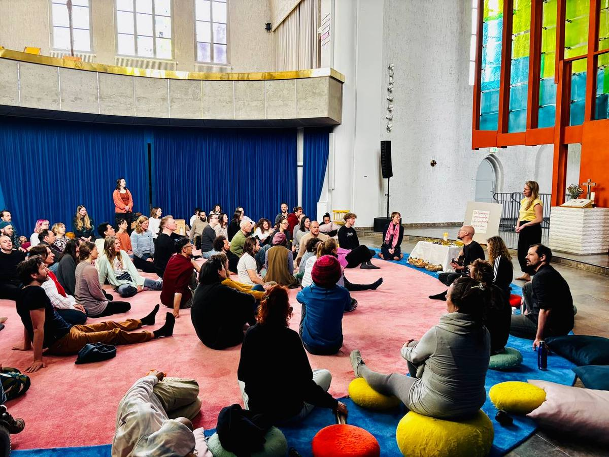
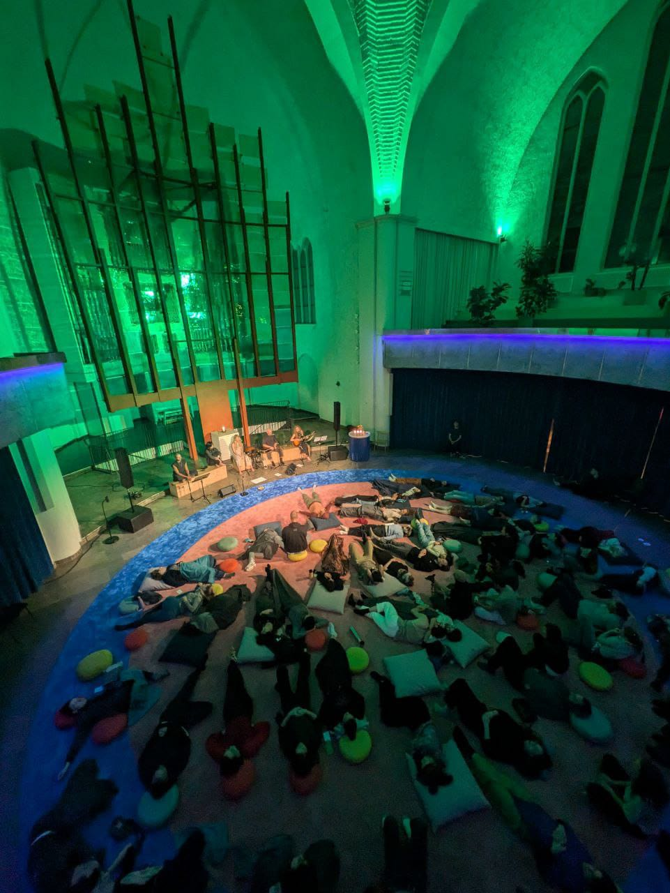
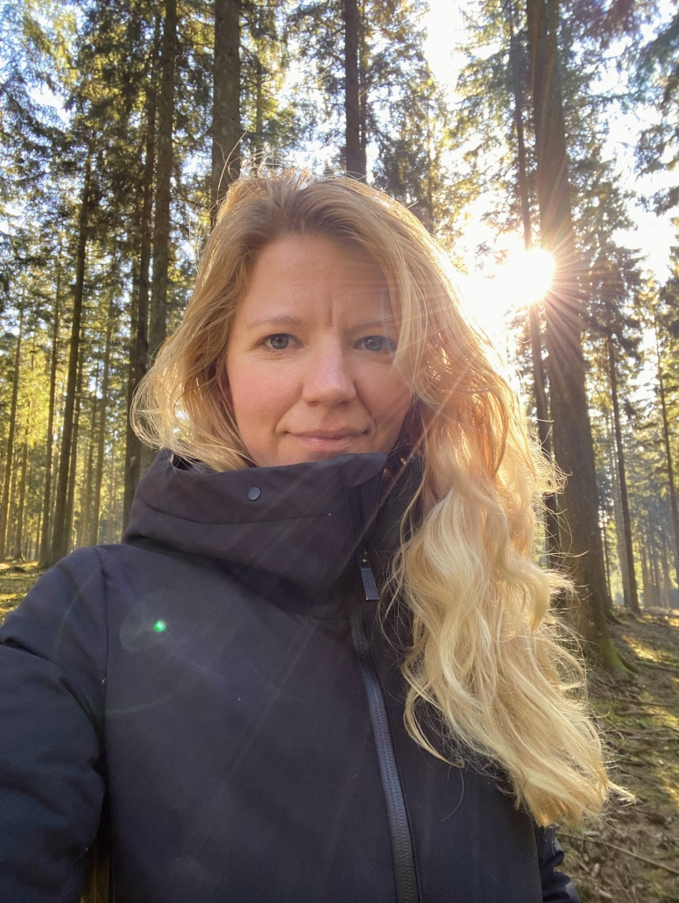
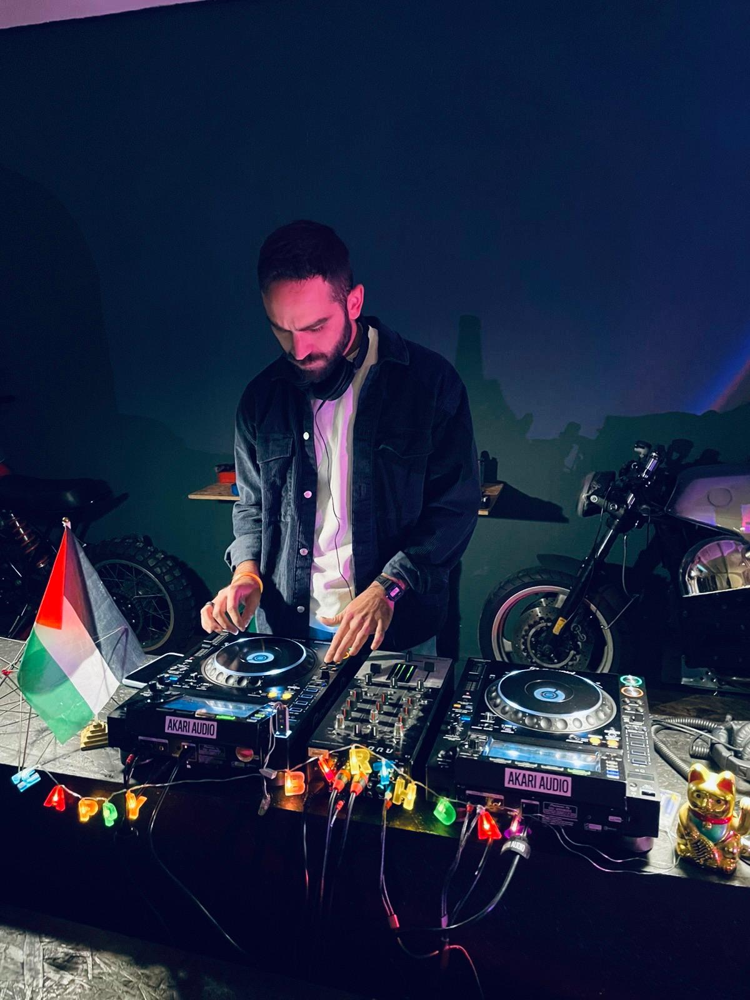
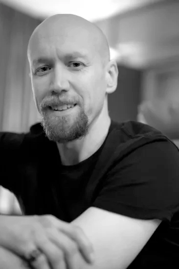

Der Schillerkiez ist Heimat von rund 22.000 Menschen unterschiedlichster Herkunft — Kreative, Alteingesessene, Zugezogene aus Dutzenden Ländern, junge Familien und Menschen ohne religiöse Bindung. Es ist ein durch und durch kosmopolitisches Viertel. Und doch haben viele seiner Bewohner:innen keine Beziehung zur Genezarethkirche, obwohl sie täglich an ihr vorbeigehen.
Das Gebäude, das den Herrfurthplatz — das eigentliche Herzstück des Kiezes — prägt, bleibt für die meisten Menschen hier ein Ort, den sie nie betreten haben.
The Schillerkiez is home to around 22,000 people of vastly different origins — creative professionals, long-term residents, newcomers from dozens of countries, young families, and people without religious affiliation. It is a genuinely cosmopolitan neighborhood. And yet many of its residents have no relationship with the Genezarethkirche, even as they walk past it every day.
The building that anchors Herrfurthplatz — the literal heart of the Kiez — remains, for most people who live here, a place they have never entered.
Stimmen aus dem Kiez ist eine sechsmonatige Residenz zur Liedentwicklung, die dieser Distanz direkt begegnet. Im Laufe der Residenz werden zehn originale Gesänge gemeinsam mit einzelnen Bewohner:innen des Schillerkiezes entstehen — aus ihren eigenen Geschichten, Erfahrungen und der Textur ihres Alltags.
Jeder Gesang entsteht in einer individuellen Einzelsitzung mit einer Kiez-Bewohnerin oder einem Kiez-Bewohner, in der der Praktiker tief zuhört, was ihnen am meisten bedeutet: Verlust und Liebe, Zugehörigkeit, Arbeit, die Stadt, der Körper, das Schwer-Sagbare. Das wird zum Material für Musik.
Die entstandenen Lieder handeln nicht von Religion. Sie handeln vom Leben. Aber sie sind heilig — in dem Sinne, dass sie menschliche Erfahrung als würdig von Aufmerksamkeit, Fürsorge und gemeinsamer Stimme behandeln. Sie werden gemeinsam gesungen, im Kirchengebäude, und sie gehören den Menschen, die sie gemacht haben.
Stimmen aus dem Kiez is a six-month song-making residency that addresses this distance directly. Over the course of the residency, ten original chants will be composed collaboratively with individual residents of the Schillerkiez — drawing on their own stories, experiences, and the texture of their daily lives.
Each chant emerges from a dedicated one-on-one session with a community member, in which the practitioner listens deeply to what matters most to them: loss and love, belonging, work, the city, the body, what is hard to say. These become the material for music.
The resulting songs are not about religion. They are about life. But they are sacred — in the sense that they treat human experience as worthy of care, attention, and collective voice. They are sung together, in the church building, and they belong to the people who made them.

Die Residenz baut auf Agapic Chants auf, einer Praxis, die Nathan Vanderpool über mehr als ein Jahrzehnt an der Schnittstelle von Musik, Gemeinschaft und säkularem Ritual entwickelt hat. Die Methode ist präzise: Der Praktiker trifft sich mit einer Person, erfragt die Geschichten und Bilder, die in ihrem Leben am meisten Gewicht tragen, und verwandelt diese in einfache, singbare, harmonisch reiche Gesänge. Die Gesänge werden dann an die Gemeinschaft zurückgegeben — einfach genug für alle zum Singen, bedeutsam genug zum Tragen.
Agapic Chants wird bereits regelmäßig in der Genezarethkirche durch die Church of Interbeing praktiziert, wo es gezeigt hat, wie real Zusammenhalt unter Menschen entstehen kann, die keinen gemeinsamen Glauben oder Hintergrund teilen. Stimmen aus dem Kiez trägt diese Arbeit nach außen — in den Kiez hinein — und bringt das Entstandene zurück in das Gebäude.
The residency is built around Agapic Chants, a practice developed by Nathan Vanderpool over more than a decade of work at the intersection of music, community, and secular ritual. The method is precise: the practitioner meets with an individual, elicits the stories and images that carry the most weight in their life, and transforms these into simple, singable, harmonically rich chants. The chants are then returned to the community — easy enough for anyone to sing, meaningful enough to carry.
Agapic Chants is already practiced regularly at the Genezarethkirche through the Church of Interbeing, where it has demonstrated its capacity to create real cohesion among people who share no common creed or background. Stimmen aus dem Kiez extends this work outward — into the neighborhood itself — and brings what emerges back into the building.

„Agapic Chants war eine magische Erfahrung. Es verwandelte einen meiner tiefsten Schmerzen, der sich zuvor wie bodenlos anfühlte, in ein Gedicht, das ich in der Welt zum Ausdruck bringen sollte. Es gemeinsam mit Nathan zu singen half, die Verwandlung durch mein gesamtes System zu bewegen. Es war nicht nur eine Veränderung der Perspektive — es erreichte meinen Körper, mein Herz und meine Seele."
— Rosa, Teilnehmerin"Agapic Chants was a magical experience. It transformed one of my deepest sorrows that previously felt like it had no bottom, into a poem that I was here to express in the world. Singing it together with Nathan helped move the transformation through my entire system. It wasn't just a change in perspective, it reached my body, heart, and soul."
— Rosa, participantKirchen stehen in pluralistischen städtischen Vierteln vor einer strukturellen Herausforderung: Die Formen von Gemeinschaft, die sie traditionell anbieten, setzen vorherigen Glauben als Eintrittsbedingung voraus. Stimmen aus dem Kiez kehrt das um. Es beginnt mit dem, was Menschen bereits tragen — ihr eigenes Leben — und schafft einen Grund, das Gebäude zu betreten, der nichts weiter verlangt als die Bereitschaft, gehört zu werden.
Der Prozess selbst ist die Brücke. Wenn jemandes Geschichte zu einem Gesang wird, ist diese Person eingebunden. Sie möchte ihn gesungen hören. Sie erzählt es weiter. Die regelmäßigen Gesangsabende der Church of Interbeing werden zum natürlichen nächsten Schritt — ein Ort, zu dem man eine Freundin mitbringt, etwas zu hören, das einem selbst gehört. Jede Einzelsitzung im Kiez zieht einen Faden zurück ins Kirchengebäude. Und entscheidend: Für viele Teilnehmende wird es das erste Mal sein, dass sie überhaupt eintreten.
Stimmen aus dem Kiez ist darauf ausgelegt, genau diese Schwelle zu senken — durch die persönlichste Einladung, die denkbar ist: deine Stimme, dein Leben, dein Lied — in diesen Mauern.
Das Vorhaben entspricht dem, was die evangelische Kirche unter einem Dritten Ort versteht: ein niedrigschwelliges, innovatives Format, das kirchliche und nichtkirchliche Akteur:innen auf Augenhöhe verbindet, neue Zielgruppen anspricht und spirituelle Erfahrung für Menschen erlebbar macht, die mit traditionellen Gemeindestrukturen keinen Berührungspunkt haben. Stimmen aus dem Kiez ist kein Ergänzungsangebot zur Ortsgemeinde — es ist eine eigenständige Form, wie Kirche heute im Kiez präsent sein kann.
Churches face a structural challenge in pluralist urban neighborhoods: the forms of community they traditionally offer require prior belief as a condition of entry. Stimmen aus dem Kiez inverts this. It begins with what people already carry — their own lives — and creates a reason to enter the building that requires nothing more than a willingness to be heard.
The process itself is the bridge. When someone's story becomes a chant, they are invested. They want to hear it sung. They tell others. The Church of Interbeing's regular chanting sessions become a natural next step — a place to bring a friend, to hear something that belongs to you. Each individual session in the neighborhood creates a thread that leads back to the church building. And crucially, for many participants, this will be the first time they have ever stepped inside.
Stimmen aus dem Kiez is designed specifically to lower that threshold, through the most personal invitation possible: your voice, your life, your song — inside these walls.
The project corresponds to what the Evangelical Church calls a Dritter Ort — a low-threshold, innovative format that connects church and non-church actors as equals, addresses new target groups, and makes spiritual experience accessible to people with no point of contact with traditional parish structures. Stimmen aus dem Kiez is not a supplementary offering to the congregation — it is a distinct form of how the church can be present in the neighborhood today.
Die Residenz gipfelt in einem großen gemeinschaftlichen Gesangsabend in der Genezarethkirche, bei dem alle zehn Gesänge gemeinsam gesungen werden. Jede teilnehmende Person wird eingeladen, Menschen aus ihrem eigenen Netzwerk mitzubringen — Freund:innen, Nachbar:innen, Familie. Für viele dieser Gäste wird es das erste Mal sein, dass sie das Gebäude betreten.
Dieses Abschlussevent ist der direkteste Ausdruck des Vorhabens. Es ist kein Konzert, keine Aufführung. Es ist eine Kiez-Zusammenkunft, die in der Kirche stattfindet — ermöglicht durch die Beziehungen, die im Laufe der sechsmonatigen Arbeit entstanden sind.
Jede der zehn Einzelsitzungen entfaltet einen Multiplikatoreffekt: Wir erwarten, dass jede teilnehmende Person mindestens fünf weitere Menschen mitbringt oder einlädt — das ergibt ein Zielpublikum von über 60 Menschen, die die Genezarethkirche möglicherweise zum ersten Mal betreten. Zum Vergleich: Die Church of Interbeing zieht bereits wöchentlich 70–100 Menschen in das Gebäude. Stimmen aus dem Kiez hat das Potential, diese Gemeinschaft mit einem neuen Kreis von Kiez-Bewohner:innen zu verbinden — und darüber hinaus, da viele von ihnen zu den bestehenden Veranstaltungen zurückkehren können.
The residency culminates in a large community chanting evening at the Genezarethkirche, in which all ten chants are sung together. Every participant will be invited to bring people from their own network — friends, neighbors, family. For many of these guests, it will be their first time in the building.
This closing event is the residency's most direct expression of its purpose. It is not a concert or a performance. It is a neighborhood gathering, held inside the church, made possible by the relationships built throughout the six months of work.
Each of the ten individual sessions creates a multiplier effect: we expect each participant to bring or invite at least five others — giving a target audience of over 60 people entering the Genezarethkirche, many for the first time. For context, the Church of Interbeing already draws 70–100 people into the building each week. Stimmen aus dem Kiez has the potential to connect that existing community with a new circle of Kiez residents — many of whom may return for future events.

„Wenn es klickt — wenn ein ganzer Raum voller Menschen zusammen singt — spürt man es im Körper. Hier passiert gerade etwas, jetzt, und wir sind alle ein Teil davon."
— Hasan Can Tutal, Teilnehmer"When it clicks — when a room full of people is singing together — you can feel it in your body. Something is happening here, right now, and we are all part of it."
— Hasan Can Tutal, participant
Nathan Vanderpool hat einen Doktortitel in Soziologie der Lancaster University, wo seine Forschung sich auf kollektive Erfahrung, Ritual und Sinnstiftung in zeitgenössischen säkularen Kontexten konzentrierte. Er macht seit über dreißig Jahren Musik — in den Bereichen Kunstmusik, Volksmusik und partizipativer Performance.
Er ist Gründer und künstlerischer Leiter von Agapic Chants und ein zentraler Mitarbeiter der Church of Interbeing. Seine Arbeit wurde international präsentiert. Er lebt im Schillerkiez — er kennt diesen Kiez, weil er in ihm zuhause ist.
Seine soziologische Ausbildung ist für dieses Projekt unmittelbar relevant: Er bringt nicht nur musikalisches Handwerk mit, sondern ein strukturelles Verständnis davon, wie Gemeinschaft entsteht, was Menschen daran hindert, Schwellen zu überschreiten, und welche Arten gemeinsamer Erfahrung dieses Vertrauen wieder aufbauen können.
Nathan Vanderpool holds a PhD in Sociology from Lancaster University, where his research focused on collective experience, ritual, and meaning-making in contemporary secular contexts. He has been making music for over thirty years, working across art music, folk traditions, and participatory performance.
He is the founder and artistic director of Agapic Chants and a core collaborator at the Church of Interbeing. His work has been presented internationally. He is based in the Schillerkiez — he knows this neighborhood because he lives in it.
His sociological training is directly relevant to this project: he brings not only musical craft but a structural understanding of how community is formed, what prevents people from crossing thresholds, and what kinds of shared experience can rebuild that trust.
Wir suchen Unterstützung für die Arbeitszeit des Praktikers über sechs Monate individueller Sitzungen, Komposition, regelmäßiger Gemeinschaftsgesangsabende und des Abschlusstreffens — sowie für die Dokumentation des entstandenen Liederbuchs.
We are seeking support to cover the practitioner's time across six months of individual sessions, composition, regular community singing events, and the closing gathering — as well as documentation of the resulting Songbook.
Das Projekt begegnet den Menschen dort, wo sie sind, hört zu, was sie tragen, und schafft einen Grund, durch die Tür zu gehen. Wenn die Menschen dieses Kiezes ihre eigenen Stimmen in diesem Gebäude singen hören, schließt sich die Distanz.
Dafür ist dieses Projekt da.
The project meets people where they are, listens to what they carry, and creates a reason to walk through the door. When the people of this neighborhood hear their own voices singing inside that building, the distance closes.
That is what this project is for.